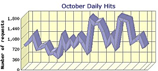

|
Plodding
Along...
We missed the last update
which is usually a good sign. No big reason this time
though, just catching up from recent adventures overseas.
 A
few people have asked about web hits. October download
statistics are: 3805 pages, 31604 files, 444MB, 1279 ISP's,
51 countries (by domain). October average was 127 pages/day,
or 1000 files/day. (The chart shows files, not pages). Google is the top referrer, ranking
nicely for specific searches like "diluvia" or
"wave bending moment" or "Noah
cubit".
Interestingly, there
were some some pretty big hitters at cornell.edu (Cornell
University) and abs.eagle.org (American Bureau of
Shipping). Hmmm.
Naval architect Allen
Magnuson has been running the numbers on seakeeping using
commercial software. Some very interesting stuff in the
pipeline. Allen Magnuson and Jim King design ships in the
US, and have similar concerns about the definition of the
hull shape for Noah's Ark.
What's next? A definition of
hull shape range is a major goal. That includes everything
from defining the cubit to sorting out the most likely wave
conditions. We are very grateful for the statistics included
in the Bible - in case you ever wondered what those boring
bits were for.
NOTE: If you have XP SP2, you
need to "Allow blocked Content" to run the web navigation.
List of pages in order of upload (scrolling on right). Some prettied up homepage bits.
...Gilgamesh has problems.
...Cranes are no problem.
...Oil Lamps are no problem.
...Comments on the Korean Study
Updated Pages... (Well, some of them)
|
The cubit is in focus again. I finally
found some people you might call cubit experts. It's not
easy finding them amongst the rabble of Egypto-maniacs and
their pyramid power novels. But praise God for fossils
(otherwise we might know almost nothing about dinosaurs) and
for Egyptian remains (otherwise we might know almost nothing
about the capabilities of the ancients).
It still looks like the
longer cubit is a better option than the 18 incher. It's
just getting a little more complicated when it comes to
subdivision theories. But the idea of a "Royal Noah
cubit" is equal to any theory I've seen about the
origin of the
royal-sized cubit.
Great
help from Jon Bodsworth who has been very generous in
allowing use of his professional photographs. http://www.egyptarchive.co.uk/
This is a big bonus, we have 3 online so far;
http://www.worldwideflood.com/ark/noahs_cubit/cubit_files/louvre_739.jpg
http://www.worldwideflood.com/ark/noahs_cubit/cubit_files/lourve_closeup_689.jpg
http://www.worldwideflood.com/ark/feeding/egyptian_predyn.jpg
|
{kind=link}
{kind=link}
{kind=link}